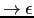

Sig: Optimización Independiente de la Sup: Análisis Sintáctico Descendente en Ant: Árbol de Análisis Abstracto Con:
Aunque la veamos como una fase separada del análisis sintáctico, puede
en numerosas ocasiones llevarse a cabo al mismo tiempo que se construye
el árbol. Así lo hacemos en este ejemplo: incrustamos la acción semántica
en la correspondiente rutina de análisis sintáctico. Así, en la rutina term, una vez
que hemos obtenido los dos operandos, comprobamos que son de tipo numérico
llamando (línea 8) a
Semantic::Analysis::check_type_numeric_operator:
Observe como aparece un nuevo atributo TYPE decorando el nodo
creado (línea 9):
1 sub term() {
2 my ($t, $t2);
3
4 $t = factor;
5 if ($lookahead eq '*') {
6 match('*');
7 $t2 = term;
8 my $type = Semantic::Analysis::check_type_numeric_operator($t, $t2, '*');
9 $t = TIMES->new( LEFT => $t, RIGHT => $t2, TYPE => $type);
10 }
11 return $t;
12 }
En el manejo de errores de tipo, un tipo especial $err_type
es usado para indicar un error de tipo:
sub check_type_numeric_operator {
my ($op1, $op2, $operator) = @_;
my $type = numeric_compatibility($op1, $op2, $operator);
if ($type == $err_type) {
Error::fatal("Operandos incompatibles para el operador $operator")
}
else {
return $type;
}
}
La subrutina numeric_compatibility comprueba que los
dos operandos son de tipo numérico y devuelve el correspondiente
tipo. Si ha ocurrido un error de tipo, intenta encontrar
un tipo conveniente para el operando:
sub numeric_compatibility {
my ($op1, $op2, $operator) = @_;
if (($op1->TYPE == $op2->TYPE) and is_numeric($op1->TYPE)) {
return $op1->TYPE; # correct
}
... # código de recuperación de errores de tipo
}
sub is_numeric {
my $type = shift;
return ($type == $int_type); # añadir long, float, double, etc.
}
Es parte del análisis semántico la declaración de tipos:
sub declaration() {
my ($t, $class, @il);
if (($lookahead eq 'INT') or ($lookahead eq 'STRING')) {
$class = $lookahead;
$t = &type();
@il = &idlist();
&Semantic::Analysis::set_types($t, @il);
&Address::Assignment::compute_address($t, @il);
return $class->new(TYPE => $t, IDLIST => \@il);
}
else {
Error::fatal('Se esperaba un tipo');
}
}
Para ello se utiliza una tabla de símbolos que es un hash %symbol_table
indexado en los identificadores del programa:
sub set_types {
my $type = shift;
my @vars = @_;
foreach my $var (@vars) {
if (!exists($symbol_table{$id})) { $symbol_table{$var}->{TYPE} = $type; }
else { Error::error("$id declarado dos veces en el mismo ámbito"); }
}
}
Cada vez que aparece una variable en el código, bien en un factor o en una asignación, comprobamos que ha sido declarada:
sub factor() {
my ($e, $id, $str, $num);
if ($lookahead eq 'NUM') { ... }
elsif ($lookahead eq 'ID') {
$id = $value;
match('ID');
my $type = Semantic::Analysis::check_declared($id);
return ID->new( VAL => $id, TYPE => $type);
}
elsif ($lookahead eq 'STR') { ... }
elsif ($lookahead eq '(') { ... }
else { Error::fatal("Se esperaba (, NUM o ID"); }
}
La función check_declared devuelve el atributo
TYPE de la correspondiente entrada en la tabla de
símbolos.
sub check_declared {
my $id = shift;
if (!exists($symbol_table{$id})) {
Error::error("$id no ha sido declarado!");
# auto-declaración de la variable a err_type
Semantic::Analysis::set_types($err_type, ($id));
}
return $symbol_table{$id}->{TYPE};
}
Modifique la subrutina check_declared para que cuando
una variable no haya sido declarada se declare ``sobre la marcha''.
¿Puede utilizar
información dependiente del contexto para decidir cual es la mejor forma
de declararla?
| 1 | p
|
| 2 | b
|
| 3 | b
|
| 4 | ds
|
| 5 | ds
|
| 6 | d
|
| 7 | d
|
| 8 | ss
|
| 9 | ss
|
| 10 | s
|
| 11 | s
|
| 12 | s
|
| 13 | s  |
| 14 | e
|
| 15 | e
|
| 16 | e
|
| 17 | t
|
| 18 | t
|
| 19 | t
|
| 20 | f
|
| 21 | f
|
| 22 | f
|
| 23 | f
|
| 24 | il
|
| 25 | il
|
int a;
a = 4;
{
int a;
a = 5;
p a
}; /* el ; es necesario */
p a
Imprimiría 5 y 4. Para traducir esta sentencia es necesario usar una lista/pila de referencias a tablas de símbolos. Cada sentencia compuesta o bloque tendrá su propia tabla de símbolos. Los identificadores se búscan en la lista de referencias a tablas de símbolos, primero en la última tabla de símbolos insertada y sino se encuentra se busca en la penúltima insertada, etc.
Guarde como un atributo del identificador () la referencia a la tabla de símbolos a la que pertenece. Guarde como un atributo del nodo bloque () la referencia a la tabla de símbolos asociada.